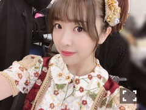

2019/0105Sat磨斧作針
乃木坂工事中の収録で着させて頂いた
晴れ着の色は黒でした
私の好きな感じ！嬉しいです。
そして紅白歌合戦、
紅組は負けてしまいましたが
物凄く楽しかったです。
DA PUMPさんのU.S.A.
そして帰り道は遠回りしたくなる
2曲に参加させていただきました
U.S.A.楽し過ぎた、、またやりたい、、笑

七瀬さんとの最後の帰り道。
七瀬さんと初めて話した時の事
覚えてます。懐かしいなあ
あの最後の七瀬さんの笑顔、素敵でした
バナナマンさんも来て下さって
嬉し過ぎてなんか本当にいろんな感情が
混ざって凄いテンションになってた。笑
そしてメンバー恒例の年越しジャンプに
初めて参加出来ました！
エンディングにも出させていただきました。
なんかこうやって出れる年齢になったんだなと
感慨深くなりました。笑
メンバーにもびっくりされてた。笑
こういう衣装とか見ると懐かしくなるな〜
バレエの舞台稽古の時
本番に着る用の衣装が渡される瞬間の
あのウキウキは今でも忘れられない
衣装の独特の匂いも好きだった
またやりたくなる〜
6日の大阪での個別握手会、
宜しくお願いします〜
みり愛
2019/01/05 17:00


コメント(382)
今年も1年よろしくね〜
次の握手を楽しみにこれから生活します
今年も笑顔で楽しもうね！！
今年もよろしく ✌️
タイトル、何て読むの？
大好き
今年も1年よろしくお願いします
明日個握行くからよろしく〜！！
明日3部から個握行きます！
多くはないけど会えるの楽しみです！
紅白見たよ！
マジでバナナマンの2人が来た時は泣いてしまった。。。笑
乃木坂とバナナマンの関係すっごく好き！
俺もああいうお兄ちゃんが欲しかったな笑
今年も沢山会いに行くね！
受験勉強もラストスパート！！
やっと会いに行ける日が近づいてきた！
がんばるね！
みりあも20歳になる年！今年も頑張ろうね！
紅白よかったよ
明日行くからよろしく！
今年もよろしくお願いします。
来年もよろしくお願いします。
再来年もよろしくお願いします。
これからもずっとよろしくお願いします。
1/20の握手会は行ける！！よろしくね！
みり愛のこれからの更なる活躍を心から祈ってます！
年末は忙しくてブログにコメントできなかった
紅白お疲れ様
初めにななその後にみりあとハマっていった俺からすると
2人の話は興味あるな
みりあも出れる年齢になったんだね
4年目にして成長したね笑
あけましておめでとうございます。
今年もよろしくお願いします。
お仕事頑張ってね！
言われてみれば紅白今まで最後までいれなかったんだね。
もうそんな年になったんだね〜
今年もいい年にしようね！
明日の個握1部から5部まであるからよろしくねぇ〜♪
あけましておめでとうございます。
今年もみり愛ちゃんの事応援させていただきます
よろしくお願いします
初年越しジャンプおめでとう笑
黒！めちゃくちゃ似合ってます！放送は明日かな？楽しみにしてますね〜！
紅白も見ました！負けちゃったけど、なぁちゃん最後だったしいい思い出になる紅白だったらいいなあ。
もう19歳だもねん！あと一年で成人だあ！(笑)
6の握手会は、行けれないけど楽しんでくださいね〜！
ダイチ
紅白のみり愛可愛かったよ〜⊂( ^-^)⊃
あけましておめでとう
本年もよろしくお願い致します。
何時も応援してるよ＼(^ω^)／
またね(*☻-☻*)
今年も活躍期待してるよー
明日行くからね！
あけましておめでとうございます。今年もよろしくお願いします。
黒の晴れ着、とても似合ってますね！テレビで見るのが楽しみです！来年は成人式、、またその時に着るのが今から楽しみです。そして紅白お疲れ様でした。しっかりみり愛を見つけることができたのでよかったです。初の年越しジャンプもできたみたいでよかったですね！1歩大人に近づいた感じがしました。
明日の個握、行くので楽しみにしています。今年初握手です！そして自分は誕生日なので最高の1日にしたいです！
2018年もいろんなことがあったけど2019年も頑張ろうね！！
2月の個別握手会初めて行くね！
みり愛ちゃんを見て年が越せて良かった(^^ )
バナナマンはやっぱり最高のお兄ちゃんだね！！
年越しジャンプできる年になって良かったね～(^^)
黒の浴衣めっちゃ大人っぽくて似合ってる(´ー｀)
今年もいい1年を過ごして下さい( ´艸｀)
1月は個握多いからファンのみなさんとたくさんおしゃべりしてきてください！！
自分は久しぶりに1月にみり愛ちゃんに会えるのでそれまで楽しみに待ってます！！！
今年もよろしくお願いします(*^_^*)
みり愛推しにコメント欄で厄介かましてると認知されそうになったばりょーと申します ♂️
すみません ♂️ ♂️ ♂️
北海道では雪が降り大変な正月になるかな〜と思ったのですが意外と降らず今年はいい正月を過ごしましたw
今年も1年しっかり応援していきますので！！
良い一年になりますように
今年もご活躍期待してます
後ろにいても小柄でしなやかなダンス踊るみり愛ちゃんをしっかり見つけましたよ笑
やっとお仕事で歳を越せる歳になったんだね
今年は20歳になる節目の年去年出来なかったお仕事も今年は巡ってくるといいね
明日の握手会には行けないけど今年初の握手会をいつも通り楽しんでね
年末年始は紅白やらいろいろとおつかれさま！
6日の握手会ではたくさん話すことあるからめっちゃ楽しみ
今年も全力で応援します！
14日の横浜で会えるのを楽しみにしています。
ああ、黒めちゃ似合うよ、可愛い(｡>﹏<｡)
あけましておめでとう＼(^o^)／
今年もよろしくお願いします
そして、紅白やCDTVお疲れ様でした
年越しジャンプも参加できて良かったなあ＼(^o^)／
みり愛たんも大人だよね＼(^o^)／（笑）
2019年も頑張って(/･ω･)/
これからも応援する(/･ω･)/
いつか仕事でバレーやったらどう？
今年も一年よろしくお願いします。
平成最後の紅白、みり愛ちゃん割とすぐ見つけられた！！
どの衣装も似合ってたね〜
明日の乃木中スペシャル楽しみだね！冬休み最後の日に見られるのは嬉しい
大阪は行けないけど、横浜出会いに行くから！！！
歳を経るにつれて、
今までのお姉さんメンバーに引けをとらないくらい
綺麗になっていきますよ。
みり愛さんが、他のメンバーを引っ張っていくように
なるとき、また、新しい乃木坂ができるような気がします。
そして、あけましておめでとうございます☺︎
今年もみり愛ちゃんと年を越すことが出来て（？）うれしいです！！
紅白もお疲れさま✨
衣装、青のも白と赤のも、どっちも可愛くて、あぁーー私も着たいぃーーーって思った( ;o; )
紅白衣装、いつも豪華な感じで素敵だなあ
モバメで今年も可愛いって言ってたから期待してた☺︎☺︎
みり愛ちゃんのバレエみたい！！
大阪全握は行けないけど今度ある個握は行きます＾＾
今年もよろしくお願いします(^O^)♡
今年もたくさん応援させてください！
たくさんみり愛に会えるといいな〜！
紅白みり愛見つけたよ〜！！
可愛かった〜！
明日久しぶりに行きます。
よろしくお願いします。
それでは。
そしてあけおめ！
紅白もお疲れ様☺️
U.S.Aも帰り道をしっかり観たよ！
バナナマンさんが副音声のとこで登場した時は思わず笑みがこぼれてしまった(笑)
年齢を重ねてできることも増えて、嬉しいよね！
明日大阪参加するね！
楽しみにしてます！
ぼむすけ。
あけましておめでとうございます～
今年もよろしくね！
今年は去年よりも沢山会いに行けるようにします！
紅白歌合戦、リアルタイムでは見れなかったけども、
バナナマンさん来てくださったの、俺も嬉しくて涙出てきてしまったw
黒の晴れ着！似合うね～
乃木中が楽しみだ！(^^)
前モバメで言ってた、バレエのポーズで写真撮ったやつ見たいなあ、、w
明日の個別握手会楽しんできてね！
それでは～
ぺいです
あけましておめでとう〜
年末、多くの音楽番組があって、イベントもあってで忙しかったでしょう、お疲れ様でした
紅白も他の番組でもずっとみり愛探してたわ、、
次僕が行く握手会は1/20東京だからその時はよろしくね
ぺい
あけましておめでとうございます。
今年もよろしくお願いします!
新年挨拶が明日の個握で直接出来ることもとても有難いです!
みり愛ちゃんの晴れ着姿、とても素敵です。
黒は落ち着いた大人な雰囲気が合って好きです。
紅白歌合戦の時は「U.S.A」の時も「帰り道は遠回りしたくなる」の時もみり愛ちゃんを見つけてめちゃくちゃ喜んでました。笑
みり愛ちゃんが楽しそうだったのでこっちまで嬉しかったです笑
バレエのことは詳しくはないけれどみり愛ちゃんが好きな事はブログからも、モバメからも伝わってきます!
みり愛ちゃんが発信しているものを少し調べてみる努力も必要だなと思います。
明日は大阪個握ですね!
10月以来にみり愛ちゃんと握手出来るのでとても楽しみです!
みり愛ちゃんと握手できることに感謝して参加したいと思います。
明日はよろしくお願いします!
よければ抱負等聞かせてくださいね
黒のお着物、似合いますね～～来年は成人式ですねはやいですね、。晴れ着も今から楽しみです
紅白の髪飾り凄くかわいかったのでアップあればみたいです
途中でバナナマンさんに気づいてませんでした？
あっ！ってかおしてたような気がします
バレエ素敵ですよね
わたしもみり愛ちゃんのバレエみたいです。
卒業なさってからでもいつでもいいのでみり愛さんのバレエをみる会開いてください
美味しいものはたくさん食べれたでしょうか？お正月だし甥っ子ちゃんたちともたくさん遊んだのでしょうか？
くれぐれも体調にはきをつてくださいね
わたしは唇がヘルペスになってめちゃくちゃ腫れてしまってます
寝不足だかストレスだか....万全の状態でセンター試験臨めるように頑張ります....
センター試験前によければ応援していただけたら嬉しいです
紅白見たよ、みり愛すぐ見つけれた(*^^)v
年越しジャンプも参加出来て良かったね(^O^)/
今年もよろしくね！！
改めまして明けましておめでとうございます。
もう初詣には行かれましたか？
今年一年の抱負や目標を聞かせてくださいね。
活躍の場が増えますように。
ほな、ばいにゃら
いひひψ(｀∇´)ψ
頑張ってください！
コメントする